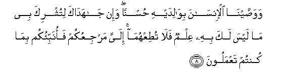
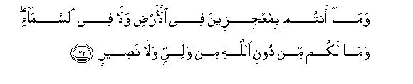
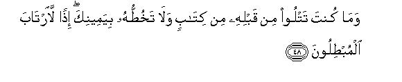
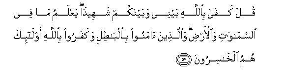

بسم الله الرحمن الرحيم
Sayyid Abul Ala Maududi - Tafhim al-Qur'an - The Meaning of the Qur'an
 29.
Surah Al Ankabut (The Spider)
29.
Surah Al Ankabut (The Spider)
The Surah takes its name from verse 41 in which the word Ankabut (Spider) has occurred.
Verses 56 to 60 clearly show that this Surah was sent down a little before the migration to Habash, and this is supported by the internal evidence of the subject matter as well. Some commentators have opined that since it mentions the hypocrites, and hypocrisy appeared in Madinah, the first ten verses of this Surah were revealed at Madinah and the rest of it at Makkah; whereas the people whose hypocrisy has been mentioned here are those who had adopted a hypocritical way of life because they were afraid of the oppression and extreme physical torture to which the Muslims were being subjected by the disbelievers. Evidently, this kind of hypocrisy could be there only at Makkah and not at Madinah. Similarly, some other commentators, seeing that in this Surah the Muslims have been exhorted to migrate, have regarded it as the last Surah to be revealed at Makkah, whereas the Muslims had migrated to Habash even before their migration to Madinah. These opinions are not based on any tradition but on the internal evidence of the subject matter, and this internal evidence, when considered against the subject matter of the Surah as a whole, points to the conditions prevailing in the time of the migration to Habash and not to the last stage at Makkah.
A perusal of the Surah shows that the period of its revelation was the period of extreme persecution of the Muslims at Makkah. The disbelievers were opposing and fighting Islam tooth and nail and the new converts were being subjected to the severest oppression. Such were the conditions when Allah sent down this Surah to strengthen and encourage the sincere Muslims as well as to put to shame those who were showing weakness of the faith. Besides, the disbelievers of Makkah have been threatened and warned not to invite for themselves the fate that the antagonists of the Truth have been experiencing in every age.
In this connection, the questions that some young men answered. For instance, their parents were urging them to abandon Muhammad (may Allah's peace be upon him), and return to their ancestral religion, for they argued: "The Qur'an in which you have put your faith, regards the rights of the parents as the uppermost; therefore, listen to what we say; otherwise you will be working against the dictates of your own Faith." This has been answered in verse 8.
Similarly, the people of some clans said to the new converts to Islam, "Leave the question of punishments, etc., to us. Listen to us and abandon this man. If God seizes you in the Hereafter, we will come forward and say, 'Lord, these people are innocent: we had forced them to give up the Faith; therefore, seize us'." This has been dealt with, in vv. 12-13.
The stories mentioned in this Surah also impress the same point mostly, as if to say, "Look at the Prophets of the past: they were made to suffer great hardships and were treated cruelly for long periods. Then, at last they were helped by Allah. Therefore, take heart: Allah's succor will certainly come. But a period of trial and tribulation has to be undergone." Besides teaching this lesson to the Muslims, the disbelievers also have been warned, as if to say, "If you are not being immediately seized by Allah, you should not form the wrong impression that you will never be seized. The signs of the doomed nations of the past are before you. Just see how they met their doom and how Allah succored the Prophets."
Then the Muslims have been instructed to the effect: "If you feel that the persecution has become unbearable for you, you should give up your homes, instead of giving up your Faith: Allah's earth is vast: seek a new place where you can worship Allah with the full peace of mind." Besides all this, the disbelievers also have been urged to understand Islam. The realities of Tauhid and the Hereafter have been impressed with rational arguments, shirk have been refuted, and drawing their attention towards the signs in the universe, they have been told that all these Signs confirm the teachings that the Prophet is presenting before them.

In the name of Allah, the Compassionate, the Merciful.


[1-3] Alif. Lam. Mim. Do the people think that they will be left alone after they have once said, "We have believed," and they will not be tested?1 The fact is that we have put to test all those who have gone before them.2 Surely, Allah has to see3 who are the truthful and who the liars.
[4] And do those who are committing evil deeds4 reckon that they will outstrip Us?5 Evil is their judgment.
[5-7] Whoever expects to meet Allah (should know that) Allah's appointed time is about to come,6 and Allah hears everything and knows everything.7 Whoever will exert will exert for his own good.8 Allah is certainly Independent of all His creations.9 As for those who believe and do good works, We shall wipe off their evils and reward them for the best of their deeds.10

[8-9] We have conjoined man to do good to his parents, but if they force you to associate with Me another (deity) whom you do not know (as such), you should not obey them."11 You have all to return to Me: then I shall tell you what you had been doing12 And those who will have believed and done good deeds, We shall certainly include them among the righteous.
[10-11] There is among the people such a one, who says,13 "We have believed in Allah", but when he was persecuted in the cause of Allah, he deemed the persecution by the people as the punishment of Allah.14 Now if there comes help and victory from your Lord, the same person Will say, "We were with you".15 Is not Allah fully aware of what is in the hearts of the people of the world? And surely Allah has to see who are the believers and who the hypocrites.16
[12-13] The disbelievers say to the believers, "Follow our way and we will bear (the burden of) your sins",17 whereas they will not bear (the burden of) your sins.18 They are utter liars. Of course, they shall bear their own burdens as well as many other burdens in addition to their own.19 And on the Day of Resurrection, they will surely be questioned about their scandal mongering.20
[14-15] We sent Noah to his people21 and he lived among them for a thousand years save fifty.22 Consequently, the Flood overtook them while they persisted in wickedness.23 Then We rescued Noah and those in the Ark24 and made it an object of warning for the people of the world.25
[16-18] And (We) sent Abraham,26 when he said to his people “Worship Allah and fear Him,27 this is better for you only if you know it. Those whom you worship instead of Allah are mere idols, and you are forging a lie.28 In fact, Those whom you worship, besides Allah, have no power to give you any sustenance. Ask Allah for sustenance, and worship Him alone and be grateful to Him, for to Him you will be returned.29 And if you deny, many a nation before you also have denied (the Truth),30 and the Messenger's only responsibility is to convey the message clearly.

[19-23] Have31 these people never seen how Allah originates the creation, and then repeats it? Surely this (repetition) is easier for Allah.32 Say to them, "Go about in the earth and see how He has begun the creation; then Allah will recreate life: surely Allah has power over everything.33 He may punish whom He wills and show mercy to whom He wills; to Him you shall be turned back. You can neither make (Him) helpless in the earth nor in the heaven,34 and you have no patron and helper to save you from Allah.35 Those who have denied Allah's Revelations and their meeting with Him, have despaired of My Mercy,36 and they will have a painful punishment.
[24-26] Then37 the only answer his people gave was to say, "Kill him or burn him."38 At last, Allah saved him from the fire;39 surely in this there are Signs for those who believe.40 He said,41 “Here in the worldly life you have made the idols, instead of Allah, a means of love among yourselves,42 but on the Day of Resurrection, you will disown and curse one another.43 Fire will be your abode and you shall have no helper." Then Lot believed in him,44 and Abraham said "I shall migrate towards my Lord.45 He is the All-Mighty, the All-Wise."46
[27] And We bestowed on him (children like) Isaac and Jacob,47 and placed in his progeny the Prophethood and the Book,48 and give him his reward in, this world, and in the Hereafter he will surely be among the righteous.49
[28-30] And We sent Lot50 when he said to his people, "You commit the indecency which no other people has ever committed before you in the world. What! Do you go to the males,51 and commit robbery and indulge in indecencies in your assemblies?"52 Then the only answer his people gave was to say, "Bring forth the torment of Allah if you are truthful." Lot said, "O my Lord, help me against these mischief makers."
[31-35] And when Our messengers came to Abraham with the good news,53 they said to him, "We are going to destroy the people of this habitation,54 for its people have become very wicked." Abraham said, "Lot is there."55 They replied, "We know full well who is in it we shall save him and all his household except his wife." His wife was of those who remained behind.56
[36] Then, when Our messengers came to Lot, he grew anxious for them and distressed at heart.57 They said, "Do not fear nor grieve:58 we shall save you and your household, except your wife, who is of those who will remain behind. We are going to bring down a torment from the sky upon the people of this habitation on account of the evil they have been committing" And We have left from the habitation a clear Signs59 for those who use their common sense.60
[37] And to Madyan, We sent their brother Shu'aib.61 He said, "O my people, worship Allah and look forward to the Last Day,62 and do not commit excesses in the land wickedly." But they treated him as a liar.63 Consequently, a severe earthquake overtook them, and they lay lifeless in their dwelling-places.64
[38-39] And We destroyed `Ad and Thamud. You have seen the places where they lived.65 Satan made their deeds seem fair to them and misled them from the right path, although they were sensible people.66 And We destroyed Korah and Pharaoh and Haman. Moses came to them with clear Signs, but they assumed arrogance in the land, whereas hey could not outstrip67 Us.
[40] Consequently, We seized each one of them on account of his sin: then against some We sent a wind to rain stones on them;68 some others were overtaken by a terrible blast,69 and some other We sank underground,70 and some We drowned.71 Allah was not unjust to them, but they were themselves being unjust to their souls.72
[41-44] The likeness of those who have taken other patrons than Allah, is the likeness of a spider, which makes itself a dwelling; and the weakest of all dwellings is the dwelling of a spider. Would that these people had knowledge!73 Allah surely knows whomever they invoke instead of Him: He is the All-Mighty, the All-Wise.74 These parables We cite for the instruction of the people, but only those people understand them, who have knowledge. Allah has created the heavens and the earth with the Truth.75 Indeed there is a Sign in this for the believers.76
[45] (O Prophet, ) recite this Book which has been revealed to you, and establish the Salat.77 Surely the Salat restrains from indecent and evil acts,78 and the remembrance of Allah is a thing even greater79 than this; Allah knows whatever you do.
[46-47] And80 do not dispute with the people of the Book except in the best manner,81 save with those who are wicked among them82 and say to them, "We have believed in that which has been sent down to us as well as in that which had been sent down to you. Our God and your God is One, and to Him we have surrendered83 (as Muslims). (O Prophet,) We have likewise sent down the Book to you;84 therefore, those to whom We gave the Book before this, believe in it,85 and so do many of these people,86 and none but the disbelievers deny Our Revelations.87


[48-52] (O Prophet,) you did not read any book before this, nor did you write any with your hand. If it were so, the worshipers of falsehood could have been involved in doubt.88 These are, in fact, clear Signs in the hearts of those who have been given knowledge;89 and none deny Our Revelations except the wicked. They say, "Why have Signs90 not been sent down upon this person from his Lord?" Say, "The Signs are with Allah: I am only a plain warner." Is this (Sign) not enough for these people that We have sent down to you the Book, which is recited to them?91 Indeed, there is mercy in it and admonition for those who believe.92 (O Prophet,) say, "Allah suffices as a witness between me and you. He knows all that is there in the heavens and the earth. Those who believe in falsehood and deny Allah, shall be the losers."

[53-55] These people wish that you hasten the torment on them.93 Had a time not been fixed for it, the torment would already have overtaken them. And most certainly it shall come (at the appointed time) suddenly while they would least expect it. They challenge you to hasten the torment, whereas Hell has encircled the disbelievers, (and they will know of it) on the Day when the torment will cover them from above them as well as from beneath their feet, and will say, "Now taste your own misdeeds."
[56-60] O My servants, who have believed, My earth is vast: so worship Me alone.94 Every living being has to taste death: then, ultimately you shall all be returned to Us.95 Those who have believed and done good works, We shall lodge them in the high palaces of Paradise, beneath which canals will be flowing: therein they shall live for ever. What an excellent reward for the doers (of good)96 for those who have shown patience97 and put full trust in their Lord!98 How many creatures are there that do not carry their provisions with them: Allah provides for them and for you too: He hears everything and knows everything.99
[61-63] If you ask them,100 "Who has created the earth and the heavens and Who has subjected the moon and the sun?" they will surely say, "Allah." How are they then being deceived? Allah it is Who gives abundantly to those of His servants He pleases and sparingly to those He wills. Surely Allah knows everything. If you ask them, "Who sent down rainwater from the sky and thereby raised the dead earth back to life?" they will surely say, "Allah!" Say, "Praise be to Allah!"101 Yet most of them do not use their common sense.
[64-67] And the life of this world is nothing but a sport and a pastime!102 The home of real life is the Hereafter. Would that they knew!103 When they board the ship, they invoke Allah, making their Faith pure for Him only; then, when He brings them safe to land, they start committing shirk that they may show ingratitude to Him for safe deliverance and enjoy (the life of this world).104 Well, they will soon come to know. Do they not see that We have made a safe Sanctuary, while the people are snatched away from all around them?105 Do they yet believe in falsehood and deny the favors of Allah?
[68-69] Who would be more wicked then he who forges a lie against Allah, or denies the Truth when it has reached him?106 Is not Hell the fit abode for such disbelievers? Those who will strive in Our cause, We shall guide them to Our own paths,107 and surely Allah is with the righteous.
1When this thing was said, the conditions prevailing in Makkah were extremely trying. Whoever accepted Islam was made a target of tyranny and humiliation and persecution. If he was a slave or a poor person, he was beaten and subjected to unbearable tortures; if he was a shopkeeper or artisan, he was made to suffer economic hardships, even starvation; if he was a member of an influential family, his own people would tease and harass him in different ways and make life difficult for him. This had created an atmosphere of fear and fright in Makkah, due to . which most people were afraid of believing in the Holy Prophet although they acknowledged him to be a true Prophet in their hearts; and some others who believed would lose heart soon afterwards and would submit and yield to the disbelievers when they confronted dreadful persecutions. Though these trying circumstances could not shake the determination of the strong-willed Companions, naturally they also were sometimes overwhelmed by an intense feeling of anxiety and distraction. An instance of this is found in the tradition of Hadrat Khabbab bin Arat, which has been related by Bukhari, Abu Da'ud and Nasa'i. He says, "During the time when we had become sick of our persecution by the mushriks, one day I saw the Holy Prophet sitting in the shade of the wall of the Ka`bah. I wen up to him and said, `O Messenger of Allah, don't you pray for us !' Hearing this his face became red with feeling and emotion, and he said, `The believers who have gone before you had been subjected to even greater persecutions. Some one of them was made to sit in a ditch in the earth and was sawed into two pieces from head to foot. Someone's joints were rubbed with iron combs so as to withhold him from the Faith. By God, this Mission will be accomplished and the time is not far when a person will travel without apprehension from San`a' to Hadramaut and there will be none but Allah Whom he will fear."
In order to change this state of agitation into forbearance, Allah tells the believers, "Ho one can become worthy of Our promises of success in the world and the Hereafter merely by verbal profession of the Faith, but every claimant to the Faith will have to pass through trials and tribulations so as to furnish proof of The truth of his claim. Our Paradise is not so cheap, nor Our special favors in the world so low-priced, that We should bless you with all these as soon as you proclaim verbal faith in Us. The vial is a pre-requisite for them. You will have to undergo hardships for Our sake, suffer losses of life and property, face dangers, misfortunes and difficulties; you will be tried both with fear and with greed; you will have to sacrifice everything that you hold dear for Our pleasure, and bear every discomfort in Our way. Then only will it become manifest whether your claim to faith in Us was true or false. This thing has been said at every such place in the Qur'an where the Muslims have been found placed in hardships and difficulties and obsessed by fear and consternation. In the initial stage of life at Madinah, after the migration, when the Muslims were in great trouble on account of economic hardships, external dangers and internal villainy of the Jews and the hypocrites, Allah said:
"Do you think that you will enter Paradise without undergoing such trials as were experienced by the believers before you? They met with adversity and affliction and were so shaken by trials that the Prophet of the time and his followers cried out, `when will Allah's help come?' (Then only they were comforted with the good tidings:) "Yes, Allah's help is near!"' (Al-Baqarah: 214).
Likewise, when after the Battle of Uhud, the Muslims again confronted a period of afflictions, it was said: "Do you think that you will enter Paradise without undergoing any trial? whereas Allah has not yet tried you to see who among you are ready to lay down their lives in His way and who will show fortitude for His sake." (Al-i-`Imran: 142).
Almost the same thing has been said in Al-i-'Imran: 179, Taubah: 16 and Surah Muhammad: 31. Allah in these verses has impressed on the Muslims that trial is the touchstone by which the pure and the impure are judged. The impure is turned aside by Allah and the pure is selected so that Allah may honor them with His favors which the sincere believers only deserve.
2That is, "This is not a new thing which you alone may be experiencing. The same has been happening before also. Whoever made a claim to the Faith was made to pass through trials and tribulations. And when the others were not given anything without the trial, you are in no way any special people that you should be favored and rewarded merely on verbal profession of the Faith."
3Literally, "It is necessary that Allah should find out." A question may be asked: "When Allah already knows the truth of the truthful and the untruth of the liar, why should He put the people to the test for the sake of these?" The answer is: Until a person has manifested his potential and capability to do a thing in practical terms, justice requires that he neither deserves any rewards nor any punishment. One man, for example, is capable of being trustworthy and another man of being un-trustworthy. Unless both are tried and one manifests trustworthiness and the other the lack of it practically, it will not be justice on the part of Allah that He should reward one for trustworthiness and punish the other for the lack of it only on the basis of His knowledge of the unseen. Therefore the knowledge Allah already possesses about the capabilities of the people and about their conduct in the future is not enough to satisfy the requirements of justice until the people have manifested their potentialities in practical ways. Justice with Allah is not based on the knowledge that a person possesses a tendency to steal and will commit a theft, but on the knowledge that he has actually committed a theft. Likewise, Allah does not bestow favors and rewards on the basis of the knowledge that a person has the potential and capability to become a great believer and fighter in His way, but on the basis of the knowledge that the person concerned has practically proved by deed and action that he is a sincere believer and a brave fighter in His way. That is why we have translated the words of the verse as: "Allah has to see..."
4This may refer to all those people who disobey Allah's Commands but here particularly it implies those wicked chiefs of the Quraish, who were in the forefront in their antagonism to Islam and persecution of the converts to Islam, e.g. Walid .bin Mughirah, Abu Jahl, `Utbah, Shaibah,`Uqbah bin Abi Mu`ait, Hanzalah bin Wail, etc. Here the context itself requires that after exhorting the Muslims to patience and fortitude against the trials and tests, those people also should be chided and scolded, who were persecuting the believers."
5It may also mean: "...that they will escape Our grasp." The words yasbiquna in the original may have two meanings: (1)`Whatever we will (i.e. the success of the mission of Our Messenger) should meet with failure, and whatever they wish (i.e. to frustrate the mission of Our Messenger) should be accomplished;" and (2) "We may want to seize them for their excesses and they should be able to escape and get out of Our reach."
6That is, "The case of the one who does not believe in the life hereafter and thinks he is answerable to none for his deeds and there is no accountability whatever, is different. He may remain heedless and act as he likes, for he will himself see the consequences when they appear against his expectations. But those who expect that they have to meet their Lord one day and rewarded and punished according to their. deeds, should not have the misunderstanding that the time of death is yet tar off. They should rather think that it is near at hand and the respite for action is about to come to an end. Therefore, whatever they can do for their well-being in the Hereafter, they should do. They should not delay self-reform on account of the baseless belief that they have yet to live a long life."
7That is, "That God before Whom they will appear to render their accounts is not uninformed. He hears everything and knows every thing, and nothing about them is hidden from Him."
8The word mujahadah means to struggle and exert one's utmost against an opponent , and when the particular opponent force is not pointed out, the word implies an all-out, many-sided struggle. The struggle that a believer has to make in the world, is of this very nature. He has to fight against Satan, who frightens him every moment of the possible losses he they have to incur for the sake of good and allures him with the benefits and pleasures of the evil. He has to fight his own self also, which exerts to make him the slave of its lusts. He has also to fight all those men, from home to the world outside, whose ideology, trends, morality, customs way of life and social and economic principles may be in conflict with his Faith; and he has to fight that state too, which enforces its laws independent of obedience to Allah, and employs its forces to promote evil instead of the good. This struggle is not of a day or two, but of a lifetime, of every moment of the day and night. And it is not a struggle in one field only but on every front of life. It is about this that Hadrat Hasan Basri has said: "Man exerts in the way of Allah, even though he may not strike one sword at any time."
9That is, "Allah is not asking you to exert your utmost because he stands in need of any help from you to establish His Godhead and keep it established and sustained. But He instructs you to enter this conflict because this opens the way to your own progress. Through this way only you can get rid of the evil and follow the way of truth; through this way alone you can develop the ability and power to rise as the standard-bearers of goodness in the world and become worthy of Allah's Paradise in the Hereafter. By waging this war you will not do any favor to Allah. but will only be helping your own selves.
10Iman means to believe in and accept sincerely all those things to which the Messenger of Allah and this Book invite; and "good works" are those which are performed in accordance with the guidance of Allah and His Messenger. The good work of the heart and mind is that man's thinking and his ideas and his intentions should be right and pure. The good work of the tongue is that man should refrain from talking evil things, and whatever he says should be just and right and true; and the good work of the limbs is that man's entire life should be spent in Allah's worship and in obedience to His Commands and Law. Two results of the belief and righteous deeds have been mentioned: (1) That man's evils will be wiped off; and (2) that he will be rewarded for the best of his deeds better than what he will actually deserve.
Wiping off of evils means several things: (1) All kinds of sins that man might have committed before his affirmation of the Faith will be pardoned as soon as he believes; (2) the errors that man might have committed after the affirmation of the faith due to human weakness, but not because of a rebellious attitude, will be overlooked in view of his good deeds; (3) man's self reform will automatically take place when he adopts a life of belief and righteousness. and most of his weaknesses will be removed from him.
The sentence, "We shall reward them for the best of their deeds", has two meanings: (1) Man will be given his rewards on the basis of the best of his deeds; and (2) he will be rewarded better and more handsomely than what he will actually deserve for his deeds. This thing has been stated at other places also in the Qur'an. For instance, in Surah Al-An`am. :160, it has been said: "He who will bring a good deed before Allah, will receive a tenfold reward for it", and in Surah AlQasas :4: "Whoever brings a good deed, shall have a better reward than that", and in Surah An-Nisa :40: "Indeed Allah does not wrong anyone even by a jot: if one does a good deed, He increases it manifold. "
11According to Muslim, Tirmidhi, Ahmad, Abu Da'ud and Nasa`i, this verse was Sent down in respect of Hadrat Sa`d bin Abi Waqqas. He was 18 or 19 years old when he embraced Islam. When his mother, Hamnah, daughter of Sufyan bin Umayyah (neice of Abu Sufyan), came to know that her son had become a Muslim, she said, "I will neither eat nor drink nor sit in shade unless you disown Muhammad. The rights of the mother are supermost even according to Allah's Command. Therefore if you disobey me, you will be disobeying Allah too." Hadrat Sa'd was perplexed and came before the Holy Prophet and told his whole story. At this, this verse was revealed. Possibly other young men who embraced Islam in the initial stage at Makkah were also confronted with similar situations. Therefore, the same theme has been repeated forcefully in Surah Luqman: 15 also.
What the verse means to impress is this: The rights of the parents, among the creation of Allah, are to be held as the supreme, but even if the parents force a person to adopt shirk, they should not be obeyed. The words, "If both of them force you to associate..." imply that a lesser pressure, or a pressure by either of them, deserves to be set aside much more promptly. The next sentence, ".... whom you do not know (as such)," is also noteworthy. This gives a sound reason for not obeying the parents in this regard. The parents certainly have the right that the children should serve them, respect them, and obey them in lawful things. But they do not have the right that one should obey them blindly against one's knowledge of the reality. Therefore, there is no reason why a person should go on following his parents' religion just because it is their religion. If the children come to know that their parents are following a false religion, they should give it up and adopt the right religion. and should not follow the wrong way whose falsehood has become clear to them even if the parents use every kind of pressure for it. When this is so in the case of even the parents, it should be so with every other person, too. No one deserves to be followed and obeyed unless one is sure that the person being followed is on the right path.
12That is, "The relationships of the world and their obligations are confined to the world. At last, the parents as well as the children have to return to their Creator, and before Him everybody will be held answerable only on the basis of his personal responsibility. If the parents have misled the children, they will be called to account . If the children have accepted deviation for the sake of the parents, they will be punished. And if the children adopted the right way, and showed no slackness in rendering the parents' lawful rights either, but the parents ill-treated them only for the reason that they did not join them in their deviation, they will not be able to escape Allah's punishment."
13Though the speaker is a single person, he uses the plural pronoun and says, "We have believed," Imam Razi has pointed out a subtle point in it. He says that the hypocrite always tries to be counted among the believers and mentions his faith as though he is also a true believe like others. His case is like that of a cowardly soldier who accompanies an army to the battlefield where the soldiers have fought well and put the enemy to rout. This cowardly person might have made no contribution at all, but when he returns home, he will say, "We put up a good fight and routed the enemy", as if he was one of the heroes of the battlefield.
14That is, "Just as one should desist from disbelief and sin due to fear of Allah's punishment, so did this man desist from faith and goodness due to fear of persecution by the people. When after belief he was confronted with threats and imprisonment and harsh treatment from the disbelievers, he thought that Allah's punishment in Hell which he will have to suffer after death in consequence of his disbelief, will be no severer than that. Therefore, he decided that he would suffer the torment of the Next World at its own time, but should give up faith and rejoin the disbelievers so that he might save himself from the torment of this world and pass an easy life."
15That is, "Today he has joined the disbelievers in order to save his skin. and has abandoned the believers for he is not prepared even to suffer a thorn prick in the cause of promoting Allah's religion, but when Allah will favor with .access and victory those who are struggling in His cause with their lives and properties, this person will come forward to have his share of the fruits of the victory and will tell the Muslims, "Our hearts were with you: we used to pray for your success: we thought very highly of your devotion to duty and your sacrifices."
Here, one should understand that in case of an unbearable persecution and loss and extreme fear, one is permitted to disown Islam and save one's life, provided that one remains firm in one's faith with a sincere heart. But there is a big difference between the sincere Muslim who disowns Islam under compulsion in order to save his life and the time-server who ideologically believes in Islam as a true religion but joins the disbelievers when he sees the dangers and risks involved in the life of Faith. Apparently, they do not seem to be much different from each other, but the thing which sets them poles apart is this: The sincere Muslim who utters disbelief under compulsion not only remains attached to Islam ideologically, but practically also his sympathies remain with Islam and the Muslims; he feels happy over their successes and unhappy at their defeat. Even under compulsion he tries to avail himself of every opportunity to cooperate with the Muslims, and remains on the look-out for a chance to join his brethren-in-faith as soon as the grip of the enemies loosens a little. Contrary to this, when the time-server finds that the way of the Faith is difficult to follow and calculates carefully that the disadvantages of siding with Islam outweigh the advantages of re joining the disbelievers, he turns away from Islam and the Muslims for the sake of personal safety and worldly gains, establishes friendship with the disbelievers and is prepared to carry out for his own interests any service for them, which may be utterly opposed to the Faith and harmful to the Muslims. But at the same time, he does not close his eyes to the possibility that Islam also might prosper some time in the future. Therefore, whenever he gets an opportunity to talk to the Muslims, he acknowledges their ideology and admits his faith and pays homage to their sacrifices most generously, so that his verbal admissions might be helpful as and when required. At another place in the Qur'an this same bargaining mentality of the hypocrites has been described, thus: "The hypocrites are watching you closely to see (how the wind blows). If victory comes to you from Allah, they will say to you, `Were we not with you?' And if the disbelievers gain the upper hand, they will say to them, `Were we not strong enough to fight against you'? Yet we defended you from the Muslims'." (An-Nisa': 141).
16That is, "Allah provides occasions for the trial again and again so that the faith of the believers and the hypocrisy of the hypocrites become manifest, and whatever is hidden in the hearts becomes exposed. The same thing has been said in Al-i-`Imran: 179: "Allah will not leave the believers in the state in which you happen to be at present: He will surely separate the pure from the impure people."
17What they meant to say was: "In the first place, the talk about life hereafter and Resurrection and accountability is all meaningless. But supposing there is another life in which the people will be called to account for their deeds, we take the responsibility that we shall take the punishment, etc. on our own selves. You should, therefore, listen to us and give up this new Faith and return to your ancestral religion." According to the traditions several chiefs of the Quraish used to counsel thus the people who embraced Islam in the beginning. So, when Hadrat `Umar accepted Islam, Abu Sufyan and Harab bin Umayyah bin Khalaf met him and said these very things."
18That is, "It is not at all possible that a person should take the responsibility for another before Allah, and thus enable the actual sinner to escape the punishment of his sin, for every person will be responsible for his own deeds there. "No bearer of a burden shall bear the burden of another." (An-Najm: 38) But if at all it be so, none will have the nerve, in face of the blazing Hell got ready to punish the disbelievers, to say to Allah, only for the sake of honoring his pledge in the world, "Lord, forgive this person and send him to Paradise: he had turned apostate on my counseling: I offer myself to suffer the punishment for my own disbelief as well as for his in Hell."
19That is "Though they will not bear the burdens of others, they will neither escape bearing a double burden: one burden of their own selves going astray, and the burden of leading the others astray." This can be understood by an example. A person commits theft and also asks another person to join him. Now if the other person also commits theft, no judge will let him off only because he had committed the offense on someone else's prompting. He will in any case be punished for the theft and it will not be fair according to any law of justice to let him off and punish instead of him the first thief who had prompted him to commit the theft. However, the first thief will suffer punishment for two offenses: the offense of committing theft himself and the offense of turning another person into a thief along with himself. This principle has been stated at another place in the Qur'an thus ".........so that they should bear the full brunt of their own burdens On the Day of Resurrection together with some of the burdens of those whom they are leading astray in their ignorance." (An-Nahl: 25) The same principle has been elucidated by the Holy Prophet in this Hadith: "whoever invited others to the right path will be granted a reward equal to the rewards of all those who listened to him and adopted the right path, without diminishing their rewards in any way. And whoever invited others to deviation will earn a sin equal to the sins of all those who followed him, without diminishing their sins in any way."
20"Scandal-mongering" implies all those untruths which were hidden in this saying of the disbelievers: "Follow our way and we will bear the burden of your sins. " In fact, they said this on the basis of two presumptions: (1) The creed of shirk they are following is based on the truth and the Holy Prophet Muhammad's doctrine of Tauhid is false; therefore, there is nothing wrong if it is rejected; and (2) there is going to be no Resurrection, and the doctrine of the Hereafter which deters a Muslim from unbelief is baseless. With these presumptions they would counsel a Muslim, saying, "Well, if you think that disbelief is really a sin, and there is going to be Resurrection when you will be called to account for this sin, then we are ready to take this sin of yours on our Selves You leave it to us and give up the religion of Muhammad and return to your ancestral religion." In this two other false things were also included: (a) Their belief that a person who commits an offense on someone else's prompting can be exempted from its responsibility, and the whole responsibility can be assumed by the one who had prompted the commission of the offense; and (b) their false promise that on the Day of Resurrection they will certainly assume the responsibility for those who might have turned apostates on their counseling. For when Resurrection will actually be established, and they will see Hell against their expectations, they will never be prepared to receive the punishment of their own disbelief as well as bear the whole burden of the sins of those others whom they had deceived and misled in the world.
21For comparison, see Al-i-`Imran: 33-34, An-Nisa': 163, AI-An`am: 84, AI-A'raf: 59-64, Yuuns: 71-73, Hud: 25-48, AI-Anbiyaa: 76-77, AlMu'minun: 23-30, AI-Furqan: 37, Ash-Shu araa: 105-123, As-Saffat: 75-82, Al Qamar: .9-15, AI-Haaqqah: 11-12, Nuh (the whole of it).
One should keep the initial verses of the Surah in view in order to understand the relevancy of these stories in this context. There, on the one hand, it has been said to the believers, "We have put to the test all those believers who have passed before you", and, on the other, the wicked disbelievers have been warned to the effect: "You should not have the misunderstanding that you will outstrip Us and escape Our grasp." It is to impress these two things that these historical events are being related here .
22This does not mean that the Prophet Noah lived for 950 years, but it means that after his appointment to Prophethood till the coming of the Flood, he went on making efforts for 950 years for the reformation of his wicked people, and he did not lose heart even though he suffered persecutions for such a long time. The same is the aim of the discourse here. The believers are being told: "You have been suffering persecutions and experiencing stubbornness of your wicked opponents hardly for six years or so. Just imagine the patience and resolution and firmness of Our servant who braved such afflictions and hardships continuously for nine and a half centuries."
The Qur'an and the Bible differ about the age of the Prophet Noah. The Bible says that he lived for 950 years. He was 600 years old when the Flood came, and lived for another 350 years after the Flood. (Gen. 7: 6 and 9: 28-29). But according to the Qur'an, he must have lived for at least a thousand years, because 950 years is the time that he spent in preaching his mission after his appointment to Prophethood till the coming of the Flood. Evidently, he must have been appointed to Prophethood after he had attained his maturity, and must have lived some life after the Flood also.
For some people such a long life is inconceivable. But in this world of God strange happenings are not rare. Wherever one may look one will see extraordinary manifestations of His power. The occurrence of certain events and things in a usual form and manner is no proof that the event or thing cannot happen in an unusual and extraordinary way. To break these assumptions there exists a long list of unusual events and things that have taken place in every kind of creation in every part of the universe. In particular, the person who has a clear concept of God's being AII-Powerful, cannot be involved in the misunderstanding that it is not possible for God, Who is the Creator of life and death, to grant a life of a thousand years or so to any man. The fact is that man of his own will and wish cannot live even for a moment, but if Allah wills, He can make him live for as long as He pleases.
23That is, the Flood came when they still persisted in their wickedness. Had they desisted from it before the coming of the Flood Allah would not have sent this torment on them.
24That is, the people who had believed in Noah, and who had been permitted by Allah to board the Ark. This has been elucidated in Surah Hud: 40, thus: "Until when Our Command game to pass and at-Tannur began to boil up, We said, `(O Noah), take into Ark a pair from every species, and embark your own people-save those who have already been specifically marked--and also those who have believed; and those who had believed with Noah were only a few."
25It can also mean this: "We made this dreadful punishment or this great event a Sign of warning for the later generations." But from the way this has been mentioned here and in Surah Qamar, it appears that the object of warning was the Ark itself, which remained on the top of the mountain for centuries and continued to remind the later generations that a Flood of such magnitude had once come in that land because of which the Ark had risen up to rest on the mountain. In Surah Qamar: 13-15, it has been said: "And We bore Noah upon a thing (Ark) made of planks and nails, which floated under Our care. This was a vengeance for the sake of him who had been slighted. And We left that Ark as a Sign. Then, is there any who would take admonition ?"
In his commentary on this verse of Surah Qamar, Ibn Jarir says on the authority of Qatadah that during the period of the Companions when the Muslims went to the land of al-Jazirah, they saw the Ark on mount Judi (according to another tradition, near the habitation of Baqirwa). In the modern times also news appear from time to time in the papers that expeditions are being sent to search out the boat, because something resembling a boat has been sighted many time from aeroplanes during flights over Mount Ararat. (For further details, see E.N. 47 of Al-A`raf and E.N. 46 of Hud).
26For comparison, see AI-Baqarah: 122-141. 258-260; AI-i-'Imran: 6471; AI-An'am: 71-82; Hud:.69-83; Ibrahim: 35-41; AI-Hijr: 45-60; Maryam: 4150; AI-Anbiyaa: 51-75; Ash-Shu'araa: 69-104; As -Saftat: 75-I 13; Az-Zukhruf: 26-35; Adh-Dhariyat: 24-46.
27That is, "Fear disobeying Him and associating others with Him."
28That is, "You are not forging idols but a lie. These idols are in themselves a lie. Then your beliefs that they are gods and goddesses, or they are incarnation of God, or His offspring, or His favorites, or intercessors with Him, ur that someone of them is bestower of health, or giver of children or jobs, are all lies, which you have invented from your own whims and conjecture. The fact is that they are in no way more than idols-lifeless, powerless and impotent.
29In these few sentences the Prophet Abraham has put together all rational arguments against idol-worship. There must necessarily be some reason for making somebody or something a deity. One such reason can be that somebody should be entitled to being a deity due to some personal excellence. Another, that he should be the creator of man, and man should be indebted to him for tiffs existence. Third, that he should be responsible for man's sustenance, his food and other means of life. Fourth, that man's future should be linked up with his support and bounty, and man may be afraid that annoying him would mean bringing about his own ruin. The Prophet Abraham said that none of these four things favored idol-worship, but they all favored and demanded pure God-worship. Saying that they are mere idols, he demolished the first argument, for a mere idol could have no excellence to entitle it to be a deity. Then, by saying that "You are their creator", be refuted the second argument, and "they have no power to give you any sustenance" destroyed the third reason. Lastly. he said, "You have to return to Allah ultimately" and not to the idols; therefore, it was not in their power to make or mar your destiny, but in the power of God alone. Thus, after a complete refutation of shirk, the Prophet Abraham made it clear to them that all the reasons for which man could regard somebody as a deity only applied to Allah, Who alone should be worshiped without associating anyone else with him.
30That is, "If you reject my invitation to Tauhid and deny my message that you have to return to your Lord and render an account of your deeds, it will not be a new thing. In the history of mankind many Prophets-like Noah, Hud, Salih (on whom be Allah's peace) before also have brought the same teachings, and their peoples denied them likewise. Now you may judge for yourselves as to whether they harmed the Prophets or only themselves".
31From here to the end of verse 23 is a parenthesis, which has been interposed in the story of the Prophet Abraham and addressed to the disbelievers of Makkah. The relevance of this interposition in the story, which is being related for the admonition of the disbelievers, is that they were basically involved in two kinds of deviation: shirk and idol-worship, and the denial of the Hereafter. The first of these has been refuted in the Prophet Abraham's speech as related above. Now the second is being refuted in these few sentences by Allah Himself.
32That is, "On the one hand, countless new things come into existence from non-existence, and on the other, similar new members continue coming into existence to take the place of the dying members of every species. The polytheists acknowledged that that was all due to Allah's power of creation and invention. They never denied Allah's being a Creator, just as the polytheists of today do not do. Therefore, the argument has been based upon what they themselves acknowledged as a reality, as if to say, "How do you think that God, Who, according to your own belief, . brings things into existence from non-existence, and noes not create things just once, but goes on bringing into existence similar things in place of the dying things repeatedly in front of your very eyes, will not be able to raise you back to life after death ?" (For further explanation, see E.N. 80 of Surah An Naml).
33That is, "When you yourselves are witnessing things being created in the first instance by God's competence and skill, you should understand it well that re-creation shall also take place by the same competence and skill. Such a thing is not beyond His power nor can it be."
34That is, "You cannot escape Allah's grasp wherever you may flee. Whether you descend into the depths of the earth or climb into the heights of the sky, you will be apprehended in any case and brought before your Lord." The something has been said in Surah Ar-Rahman as a challenge to the jinns and mankind: "O company of jinns and men! If you have the power to escape across the bounds of the earth and heavens, then do escape! You shall not escape, for it requires a great power." (v. 33).
35That is,"Neither you yourselves have the power that you should escape Allah's grasp, nor is any of your guardians or patrons or supporters so powerful that he should give you refuge against Allah and save you from His punishment. None in the entire universe can dare rise as a supporter of those who have committed shirk and disbelief, who have refused to submit before Divine Commands, who have dared disobey Allah impudently, and raised storms of wickedness and mischief on His earth; and withhold enforcement of the Divine decree of torment against them, or have the nerve to say in God's Court: "They are my followers: therefore, whatever they might have done should be forgiven them."
36That is, "They have no share in My mercy, and they should entertain no hope whatever of getting any share of My mercy. When they denied the Revelations of Allah, they themselves gave up their right to benefit by the promises Allah has made to the believers. Then, when they have denied the Hereafter and do not at all believe that one day they will have to stand before their God, it only means that they cherish no hope at all of Allah's pardon and forgiveness. After this when they will open their eyes in the-Hereafter, against their expectations, and will also see the truth of those Signs of Allah, which they had denied, there is no reason why they should expect to receive any share from Allah's mercy."
37From here the discourse again turns to the story of the Prophet Abraham.
38That is, they had no answer to the Prophet Abraham's rational arguments. The only answer they gave was: "Cut off the tongue that talks the truth and let not the person live, who points out our error and tells us to give it up." The words, "Kill him or burn him", indicate that the whole crowd was unanimous that the Prophet Abraham should be put to death. However, they differed about the method. Some said that he should be killed, and others said that he should be burnt alive, so that no one in future should dare say the sort of the thing he said.
39This sentence by itself shows that they had at last decided to burn the Prophet Abraham and he was cast into the fire. Here it has only been said that Allah saved him from the fire; but in Surah AI-Anbiyaa it has been elucidated that Allah commanded: "O fire! Be cool and become safe for Abraham!" (v. 69) Evidently, if he was not at all cast into the fire, the Command to the fire to become cool and safe would be meaningless. This proves that properties of all things are dependent on Allah's Command and whenever He pleases He can change the property of anything He likes. Normally fire burns and every combustible thing catches fire. But this property of the tire is not of its own acquisition but given by God. And this property has in no way tied up God that He they give no Command against it. He is the Master of His fire. He can command it any time to give up the property of burning. At any time He can turn a furnace into a bed of roses. But events contrary to the course of nature occur only rarely to serve some great purpose or cause. However, the usual phenomena to which we are accustomed in our daily lives, cannot be made an argument to say that Allah's power has been tied up with these, and nothing unusual can take place even by Allah's Command.
40"Signs ... believe": Signs for the believers in this that the Prophet Abraham did not follow the religion of his family, community and country but Followed the true knowledge through which he came to know that shirk is falsehood and Tauhid the Reality; and in this that he went on exhorting his people to accept the Truth and to desist from falsehood in spite of their stubbornness and prejudices; and in this that he was even prepared to suffer the horrible punishment by the fire, but was not prepared to give up the Truth; and in this that Allah did not even spare the Prophet Abraham, His Friend, from the trials and tests; and in this that when the Prophet Abraham got successfully through the tests set by Allah, then did come Allah's succor, and in such a miraculous way that the bonfire was turned cool for him!
41The Prophet Abraham must have said this after his safe deliverance tram the fire.
42That is, "You have built up your collective life on the foundation of idol-worship instead of. God-worship, which can keep you bound together as a nation only to the extent of mundane life. For here in this world people can be got together around any creed, true or false, and any kind of agreement and concord on any belief, however wrong and ill-conceived, can become a means of the establishment of mutual friendships, kinships, brotherhoods, and all other religious, social, cultural, economic and political relationships."
43That is, "The collective life that you have built on the false creed in the world cannot endure in the Hereafter. Only those relationships of love and friendship and cooperation and kinship and mutual regard and esteem will endure there, which have been based on the worship of One God and virtue and piety in the world. All relationships founded on disbelief and shirk and deviation will be severed, and all kinds of love will change into enmity and hatred. The son and the father, the husband and the wife, the saint and the disciple, all will curse each other, and each will blame his deviation on the other, and will say, "This wicked person led the astray: he should be given a double punishment." This thing has been stated at several places in the Qur'an. For example, in Surah Zukhruf, it has been said: "Friends on that Day shall become enemies of one another, except the righteous." (v. 67) In Surah Al-A`raf: "As each generation will be entering Hell, it will curse Its preceding generation till all generations shall be gathered together there: then each succeeding generation will say regarding the preceding one, "O Lord, these were the people who led us astray; therefore, give them a double chastisement of the Fire." (v. 38) And in Surah Al-Ahzab: "And they will say; 'Our Lord, we obeyed our chiefs and our great men, and they led us astray front the right path. Lord, give them a doable chastisement and curse them severely." (vv. 67-68).
44The context shows that when the Prophet Abraham came out of the fire and spoke the preceding sentences, only Prophet Lot from the entire crowd came forward to proclaim his belief and adopt his obedience. It is just possible that many other people also on this occasion might have been convinced of the Prophet Abraham's being a true Prophet, but in view of the violent reaction that had been shown openly by the entire community and the government against Abraham's Faith, no one else could muster up courage to affirm faith in such a dangerous truth and follow it. This good fortune fell to the lot of only one man, the Prophet Lot, the nephew of the Prophet Abraham, who at last accompanied his uncle and aunt (Hadrat Sarah) in their migration also.
Here, the question may arise: Was the Prophet Lot a disbeliever and a mushrik before this, and did he believe only after witnessing the miracle of the Prophet Abraham's emerging safe and sound from the fire? If it is so, can a person who has been a mushrikr be appointed to Prophethood? The answer is this: Here the Qur'an has used the words fa-amana la-hu Lut, which do not necessarily imply that the Prophet Lot disbelieved in God before this, or associated other deities with Him. They only show that after this he confirmed the Prophethood of the Prophet Abraham, and adopted his obedience. Possibly the Prophet Lot was a young boy then and this might be the first very occasion when he became acquainted with the teachings of his uncle and his Prophethood.
45That is, "I shall leave my country for the sake of my Lord and go wherever my Lord may take me."
46That is, "He possesses the power to help and protect me, and whatever He decides for me will be based on wisdom."
47The Prophet Isaac was the son and the Prophet Jacob the grandson. The other sons of the Prophet Abraham have not been mentioned here, because from his Midianite descendants only the Prophet Shu'aib was appointed a Prophet, and no Prophet was born among his Ishmaelite descendants for 2500 years or so till our Holy Prophet Muhammad (may Allah's peace and blessings be upon him). Contrary to this, the descendants of the Prophet Isaac (peace be upon him) continued to be blessed with the Prophethood and the Book till the Prophet Jesus (peace be upon him).
48This covers all the Prophets who were raised from all the branches of the Prophet Abraham's progeny.
49What is meant to be said is this: The rulers and the learned men and the priests of Babylon who tried to defeat the mission of the Prophet Abraham (Allah's peace be upon him) and the polytheistic people who had followed their wicked chiefs blindly, have since been blotted out and no trace of them is to be found anywhere in the world, but the person whom they had wanted to annihilate by burning in the fire only because he had proclaimed the Word of Allah, and who eventually had to leave his country empty-handed, was so blessed by Allah that his name has been well known in the world since the past 4,000 years and will remain so till the Last Day. All the Muslims and the Christians and the Jews unanimously recognize that Friend of the Lord of the worlds as their spiritual Leader. Whatever guidance mankind has received during the past 40 centuries has been received through this one man and his righteous descendants. The unique reward that he will get in the Hereafter is assured, but the place of honor that he has gained even in this world has not been gained so far by any of those who have exerted themselves in pursuit of the worldly benefits and advantages.
50For comparison, see Al-A`raf: 80-84, Hud: 69-83; Al-Hijr: 57-79; Al-Anbiyaa: 71-75; Ash-Shu`araa: 16Q-175; An-Naml: 54 59;.As-Saffat: 133-138; AIQamar: 33-40.
51That is, "You satisfy your sex desire with the males." As stated in AI A'raf: 81: "you gratify your lust with men instead of women."
52That is, "You do not even hide yourself when you commit this filthy act, but commit it openly in your assemblies, in front of others." The same has been stated in Surah An-Naml: 54, thus: "Do you commit the indecency while you see it?"
53According to the details given of this in Surah Hud and A1-Hijr, the angels who had been sent to bring the torment on the people of the Prophet Lot, first came to the Prophet Abraham and gave him the good news of the birth of the Prophet Isaac and after him of the Prophet Jacob. Then they told him that they had been sent to destroy the people of Lot.
54"This habitation" refers to the territory of the people of Lot. The Prophet Abraham at that time resided in the Palestinian city of Hebron, now called AI-Khalil. A few miles to the south-east of this city lies that part of the Dead Sea, which was once inhabited by the people of Lot and which is now under sea water. It is a low-lying area and is clearly visible from the hill country of Hebron. That is why the angels, pointing towards it, had said "We are going to destroy this habitation." (See also E.N. 114 of Ash-Shu'araaa).
55According to the initial part of this story as related in Surah Hud, the Prophet Abraham at first was perturbed to see the angels in human shape, for he knew that the coming of the angels in human shape was always a prelude to some dangerous mission. Then, when they gave him the good news, his fear was allayed and he came to know that they had been sent to the people of Lot. Then he began making entreaties of mercy for those people (Hud: 7475), but his entreaties were not granted, and it was said: "Do not plead for them any more: your Lord's decree has been issued, and the punishment now cannot be averted." (v. 76) After this answer, when the Prophet Abraham lost all hope of any increase in the respite of Lot's people, he became anxious about the Prophet Lot himself, and said, what has been related here: "Lot is there." That is, "If the torment comes down when Lot is there, how will he and his household retrain safe from it?"
56According to Surah Tahrim: 10, this woman was not faithful to the Prophet Lot. That is why it was decreed that she too, would be afflicted with the torment in spite of being a Prophet's wife. Most probably when the Prophet Lot had come to Jordan after the migration and settled there, he might have married among the ,people living there. But the woman did not believe even after spending a lifetime with him, and her sympathies remained with her own people. As Allah has no consideration for relationships and brotherhoods and every person's case is decided on the basis of his own faith and morality, even being a Prophet's wife did not profit her in any way and she met her doom along with her own people with whom she had remained attached in faith and morality.
57The reason for this anxiety and distress was that the angels had come in the shape of handsome, young boys. The Prophet Lot was aware of his people's morals. Therefore, he became perturbed at their arrival. He was thinking, "If I receive these guests in my house, it will be difficult to save them from the immoral people; if I do not receive them, it will be highly uncivil and unbecoming of the noble people. Moreover, if I do not provide shelter to these travelers, they will stay the night elsewhere, which would mean that I have myself given them away to the wicked people." What happened after this has not been related here. But according to the details given in Surahs Hud, AI-Hijr and AI-Qamar, the people of the city thronged to the Prophet Lot's house and insisted that the guests be handed over to them for immorality.
58That is, "As for us, you should neither fear that they will in any way he able to harm us, nor be anxious about how you will protect us from them." This was the time when the angels revealed their identity to the Prophet Lot, and said that they were not men but angels, who had been sent to bring the scourge on his people. According to the elucidation in Surah Hud, when the people were rushing into Lot's house and he felt that he could in no way save his guests from them, he cried out: "I wish I had the power to set you right, or I could find some strong support for refuge."' (v. 80) At this time the angels said: "O Lot, we are messengers sent by your Lord; they will not be able to harm you at all." (v. 81).
59"A clear Sign": the Dead Sea, which is also called Sea of Lot. The Qur'an at several places has addressed the disbelievers of Makkah, saying, "A Sign of the torment that visited this wicked people on account of their misdeeds still exists on the highway, which you see night and day during your trade journeys to Syria." (AI-Hijr: 76; As-Saftat: 137). Today it is being admitted with near certainty that the southern end of the Dead Sea came into being as a result of a violent earthquake when the area in which Sodom, the central city of the people of Lot, was located sank underground. In this part there are still signs of some submerged habitations. Exploratory attempts are being made with the modern diving apparatus but the results are still awaited. (For further explanation, see E. N. 114 of Ash-Shu`araa A'raf.
60For the Islamic punishment of sodomy, see E.N. 68 of Surah Al 191.
61For comparison, see AI-'raf: 85-93, Hud: 84-96, Ash-Shu araa: 177
62This can have two meanings: (1) "Look forward to the life hereafter, and do not think that there is no life after this worldly life, when you will have to render an account of your deeds and be rewarded or punished accordingly." (2) "Work righteously so as to meet a good end in the Hereafter."
63That is, "They did not believe that the Prophet Shu`aib was a Messenger of Allah and the teachings he gave were from Allah and that if they rejected him they would be punished by a torment from Allah.
64"Dwelling-places": the whole area and country inhabited by those
65Every Arab was acquainted with the lands where these two nations had lived. The whole of southern Arabia now known as Ahqaf, Yaman and Hadramaut, was the land of 'Ad in the ancient times, and the Arabs knew it. The whole area in the north of the Hijaz, from Rabigh to 'Aqabah and from Madinah and Khaiber to Taima' and Tabuk. still abounds with Thamudic monuments, which must have been more prominent than they are today in the time when the Qur'an was being revealed.
66That is, "They were not ignorant and foolish people, but were the most civilized people of their own times. They performed and carried out their worldly duties and chores very carefully and intelligently. Therefore, it cannot be said that Satan deluded them and pulled them on to his way by artifice and deception. Nay, they adopted the way shown by Satan with open eyes and with full understanding because it promised great pleasures and advantages; and they abandoned the way presented by the Prophets because it appeared to be colorless, tasteless and troublesome due to moral restrictions."
67That is, "They could not have got away and escaped Allah's grasp: they had no power to frustrate and defeat Allah's plans and schemes."
68That is, `Ad who were subjected to a furious windstorm which blew on them for seven nights and eight days continuously.
69That is, Thamud.
70That is, Korah.
71That is, Pharaoh and Haman.
72The stories that have been related in the foregoing verses, have been addressed and directed both to the believers and to the disbelievers. To the believers they have been addressed so that they do not feel discouraged and distressed at heart, and keep aloft the banner of the Truth firmly and patiently even in the face of the severe persecutions and hardships, and should have full faith in Allah that His succor shall ultimately come, and He will frustrate the designs of the wicked people and make the Word of the Truth to prevail. On the other hand, these have been addressed to those wicked people also, who in their arrogance were bent upon exterminating the Islamic movement. They have been warned to the effect: "You have formed a wrong opinion about Allah's forbearance and clemency. You think; that His is a lawless Kingdom. If you have not been seized so far for your rebellion and your tyrannies and wicked deeds and have been granted a long respite so that you may reform yourselves, you have inferred that there exists no power whatever which can call you to account, and that one can go on doing whatever one likes endlessly on this earth. This misconception will ultimately lead you to the same doom that has already been met by the peoples of Noah and Lot and Shu`aib, and experienced by `Ad and Thamud, and seen by Korah and Pharaoh.
73All the above-mentioned nations were involved in shirk, and their belief about their deities was that they were their supporters and helpers and guardians, and had the power to make or mar their destinies; so when they will have won their goodwill by worship and. presentation of offerings they will succor them in need and protect them against calamities and afflictions. But, as shown by the historical events cited above, all their beliefs and superstitions proved to be baseless when their destruction was decreed by Allah. Then no god, and no god incarnate, and no saint or spirit, and no jinn or angel, whom they worshiped came to their rescue, and they met their destruction with the realization that their expectations and beliefs had been false and futile. After relating these events, Allah is now warning the mushriks to the effect: "The reality of the toy-house of expectations that you have built on your faith in the powerless servants and imaginary deities, apart from the real Master and Ruler of the universe, is no more than the cobweb of a spider. Just as a cobweb cannot stand the slightest interference by a finger, so will the toy-house of your expectations collapse in its first clash with the scheme of Allah. It is nothing but ignorance that you are involved in the web of superstition. Had you any knowledge of the Reality you would not have built your system of life on baseless props. The fact is that none other than the One Lord of the worlds in this universe is the Owner of power and authority, and His support is the only support which is reliable. "Now whoever rejects taghut and believes in Allah has taken a firm support that never gives way. And Allah hears everything and knows everything." (Al-Baqarah: 256).
74That is, "Allah knows full well the reality of those beings and things which they have taken as their deities and which they invoke for help. They are absolutely powerless. The Owner of power is only Allah, Who is controlling the system of this universe according to His own wisdom and design." Another translation of this verse can be: "Allah knows full well that those whom they invoke, apart from Him, are nonentities, and He alone is the All Mighty, the All-Wise."
75That is, "The system of the universe is based on the truth and not on falsehood. Whoever ponders over this system with an unbiased mind will realize that the earth and the heavens owe their existence to reality and fact and not to superstition and fancy. Here there is no possibility that whatever a person may conceive in his mind and whatever philosophy he may invent out of his personal whim and conjecture should fit in with the system. Here only such a thing can succeed and endure, which is in harmony with the reality and actual fact. A structure that is raised on unreal presumptions and hypotheses will ultimately collapse when it clashes with the reality. The system of the universe clearly testifies that its Creator is One God, and One God alone is its Master and Disposer. If a person works against this basic Reality on the presumption that this world has no God, or that it has many gods, who devour the offerings of their devotees and in return give them a license to do whatever they please and a guarantee to live in peace and happiness, the Reality will not change due to his presumptions, but, on the contrary, he himself will some time meet with a grave disaster."
76That is, "A clear evidence exists in the creation of the earth and the heavens about the truth of Tauhid and the refutation of polytheism and atheism, but this evidence is found only by those who accept the teachings of the Prophets of Allah. Those who deny them do not find it even though they see everything."
77The address apparently is directed to the Holy Prophet but, in fact, it is meant for all the believers. Until now they were being counselled patience and reliance on Allah to brave the extreme trying conditions in which they found themselves and the persecutions they were being subjected to on account of their faith. Now they are being told to recite the Qur'an and establish the Salat as a practical device, for these are the two things which endow a believer with a strong character and a wonderful capacity by which he can not only brave successfully the most violent storms of evil and falsehood but can even subdue them. But man can acquire this power from the recitation of the Qur'an and the Prayer only when he does not retrain content with the mere recital of the words but also understands well the Qur'anic teachings and absorbs them in his soul, and his Prayer does not remain confined to physical movements but becomes the very function of his heart and the motive force for his morals and character. The desired quality of the Prayer is being mentioned by the Qur'an itself in the next sentence. As for its recitation, one should know that the recitation which does not reach the heart beyond the throat, cannot even give man enough power to remain steadfast to his faith, not to speak of enabling him to withstand the furies of unbelief. About such people, a Hadith says: "They will recite the Qur'an, but the Qur'an will not go beyond their throats; they will leave the Faith just as the arrow leaves the bow." (Bukhari, Muslim, Mu'atta`). As a matter of fact, the recitation which does not effect any change in a man's way of thinking, and his morals and character, and he goes on doing what the Qur'an forbids, is not the recitation of a believer at all. About such a one the Holy Prophet has said: ;'He who makes lawful what the Qur'an has declared unlawful, has not believed in the Qur'an at all." (Tirmidhi, on the authority of Suhaib Rumi). Such a recitation does not reform and strengthen a maws self and spirit, but makes him even more stubborn against Allah and impudent before his own conscience, and destroys his character altogether. For the case of the person who believes in the Qur'an as a Divine Book, reads it and comes to know what his God has enjoined, and then goes on violating His injunctions, is of the culprit, who commits a crime not due to ignorance but after full knowledge of the law. The Holy Prophet has elucidated this point in a brief sentence, thus: "The Qur'an is a testimony in your favor as well as against you." (Muslim). That is, "If you follow the Qur'an rightly it is a testimony in your favor. Whenever you are called to account for your deeds, here or in the hereafter, you can produce the Qur'an as a testimony in your defense, saying that whatever you did was in accordance with this Book. If what you did was precisely according to it, no jurist in the world will be able to punish you, nor will God in the Hereafter hold you accountable for it. But if this Book has reached you, and you have read it and found out what your Lord demands from you, what He enjoins and what He forbids, and then you adopt an attitude opposed to it, then this Book will be a testimony against you. It will further strengthen the criminal case against you in the Court of God. Then it will in no way be possible for you to escape the punishment, or receive a light punishment, by making the excuse of ignorance."
78This is an important characteristic out of the many characteristics of the Prayer, which has been presented here prominently in view of its relevance to the context. To counter the severe storm of opposition and resistance that the Muslims were experiencing in Makkah, they stood in need of a moral force rather than any material power. To bring about the moral force and develop it suitably two practical devices were pointed out in the first instance, the recitation of the Qur'an and the establishment of the Salat. Now they are being told that the establishment of the Salat is the means through which they can get rid of those evils in which they themselves had been involved before they embraced Islam and in which the non-Muslim Arabs and the non-Arab world around them were involved at that time.
With a little thinking one can easily understand why this special advantage of the Prayer has been particularly mentioned here. Evidently, getting rid of the moral evils is not only useful insofar as it is beneficial for those who attain the moral purity, both here and in the Hereafter, but its inevitable advantage is that it gives them unique superiority over those who might be involved in diverse moral evils, and who might be exerting their utmost to sustain the impure system of ignorance, which nourishes those evils, against the efforts of the morally pure people. Indecent and evil acts are those which man by nature abhors, and which have always been held as evil in principle by the people of every community and society, however depraved and perverted practically. The Arab society in the days of the revelation of the Qur'an was no exception to this. Those people also were aware of the moral virtues and the evils: they valued the good above the evil and there might be none among them, who regarded the evil as identical with the good, or depreciated good. Under such conditions, in a perverted society like that, the emergence of a movement which revolutionized morally members of the same society itself as soon as they came into contact with it, and raised them in character high above their contemporaries, inevitably had widespread effects. The common Arabs could not possibly fail to feel the moral impact of the movement, which eradicated evils and promoted goodness, and instead go on following those who were themselves morally corrupt and were fighting to sustain the system of ignorance, which had been nourishing those evils since centuries. That is why the Qur'an at that time exhorted the Muslims to establish Salat instead of urging them to collect material resources and force and strength that could win over the people's hearts and defeat the enemy without any material force.
The virtue of the Prayer that has been mentioned here has two aspects: its essential and inseparable quality that it restrains from evil and indecent acts, and its desired quality that the one who performs it should in actual fact refrain from evil and indecent acts. As for the first quality the Prayer does restrain people from the evils. Anyone who ponders a little over the nature of the Prayer, will admit that of all the checks and brakes that can be put on man to restrain him from the evils, the Prayer can be the most effective. After all, what check could be more effective than this that man should be called upon five times a day for the remembrance of Allah and made to remind himself again and again that he is not wholly free and independent in this world but is the servant of One God, and his God is He Who is aware of his open as well as hidden acts, even of the most secret aims and intentions of his heart, and a time will surely come when he will have to account for all his deeds before his God. Then he is not only reminded of this but is given practical training at every Prayer time that he should not disobey any of his God's Commands even secretly. From the time that he stands up for the Prayer till its completion man has to perform continuously certain acts in which there is no third person, besides him and his God, who can know whether he has obeyed God's law or , disobeyed it. For instance, if the man's wudu (state of ablutions ) has become void and he stands up for the Prayer, there ca.. be no one, besides him and God, who will know that he is no longer in the state of wudu. If the man has expressed no intention of the Prayer but just goes on performing all the required movements and recites poetry, for instance, instead of the prescribed texts quietly, there is none, besides him and his God who can be aware of the secret that he has not, in fact, performed his Prayer at all. Not with standing this, if a person offers the Prayer five times a day, fulfilling faithfully all the conditions of the Divine law in respect of the cleanliness of the body and dress, and the essentials of the Prayer and its recitation, etc. it means that through this Prayer his conscience is being awakened to life several times a day, he is being helped to-become a responsible and dutiful person, and he is being practically trained that he should, under his own urge of obedience, abide by the law which he has believed in openly as well as secretly, regardless whether there is any external force to make him abide by it or not, and whether the people of the world have any knowledge of his intentions and deeds or not.
Thus considered, one cannot help admitting that the Prayer not only restrains man from the evils and indecencies, but, in fact, there is no other method of training in the world, which may be so effective as the Prayer is in restraining man from the evils. As for the question whether or not man in actual fact refrains from the evils even after attendance at the Prayer, this depends upon the man himself, who is undergoing training for self-reform. If he has the intention to benefit from it, and endeavors for it, the reformatory effects of the Prayer will certainly have their impact on him. Otherwise, evidently, no reformatory device in the world can be effective with a person, who is not prepared to receive any impact of it, or tries to avoid its impact intentionally. This can be explained by an example. The essential quality of food is to nourish the body and develop it. But this advantage can be had only when food is allowed to be assimilated. If a person vomits what he eats after every meal, his food cannot profit him in any way. Just as, keeping such a person in view, one cannot say that food is not nutritious for the body, because so-and-so is becoming a skeleton in spite of eating food, so can no one present the example of an unrighteous offerer of the Prayer and say that the Prayer does not restrain from the evils, because so-and-so is unrighteous in spite of his Prayer. Just as about such a person it will be apt to say that he does not offer the Prayer at all, so about the person who vomits everything he eats, it will be apt to say that he does not eat his food at all.
Precisely the same thing has been reported from the Holy Prophet and some great Companions and their followers. `Imran bin Husain reports that the Holy Prophet said: "He Whose Prayer did not restrain him from the evil and indecent acts, offered no Prayer at all." (Ibn Abi Hatim). -Ibn `Abbas has reported the Holy Prophet as saying: "The Prayer which did not restrain a person from the evil and indecent acts, led him further away from Allah." (Ibn Abi Hatim, Tabarani). A Hadith containing the same theme has been reported by Hasan Basri directly from the Holy Prophet (Ibn Jarir, Baihaqi). Another Hadith reported on the authority of Ibn Mas`ud is to the effect: "He who did not obey the Prayer, offered no Prayer at all, and obedience to the Prayer is that one should refrain from the evil and indecent acts." (Ibn Jarir, Ibn Abi Hatim). Several sayings to the same effect have been reported on the authority of 'Abdullah bin Mas`ud, `Abdullah bin `Abbas, Hasan Basri, Qatadah and A`amash, etc. Imam Ja`far Sadiq has said: "He who wants to know whether his Prayer has been accepted or not, should see how far his Prayer has restrained him from the evil and indecent acts. If he has been restrained from the evils, his Prayer has been accepted." (Ruh al Ma `ani).
79This can have several meanings: (1) "That the remembrance of Allah (i.e. Prayer) is a thing of much higher value: it not only restrains from the evils, but, over and above that, it induces people to act righteously and urges them to excel one another in good acts," (2) "that Allah's remembrance in itself is a great thing: it is the best of acts: no act of man is greater in value than this. ` (3) "that Allah's remembrance of you is a greater thing than your remembrance of Him. Allah has said in the Qur'an: "So remember Me: I will remember you'." (Al-Baqarah: 156). Thus, when the servant remembers Allah in the Prayer, inevitably Allah also will remember him, and the merit of Allah's remembering the servant is certainly greater than the servant's remembering Allah. Besides these three meanings, there is another subtle meaning also, which the wife of Hadrat Abud Darda has explained. She says, "Allah's remembrance is not restricted to the Prayer, but, its sphere is much vaster. When a man observes a fast, or pays the Zakat or performs a righteous act, he inevitably remembers Allah. That is why the righteous act emanates from him. Likewise, when a man refrains from an evil act when an opportunity exists for it, even this also is the result of Allah's remembrance. Thus, the remembrance of Allah pervades the entire life of a believer."
80It should be noted that a little below in this Surah the people are being exhorted to migrate. At that time Habash was the only place of safety to which the Muslims could migrate, and Habash in those days was under the domination of the Christians. Therefore, in these verses the Muslims are being instructed as to how they should argue and discuss matters concerning religion with the people of the Book when such an occasion arises.
81That is, "The discussion should be conducted rationally, in a civilized and decent language, so that the ideas of the other person may be reformed. The preacher's chief aim should be to appeal to the addressee's heart, convey the truth to him and bring him to the right path. He should not fight like a wrestler whose only object is to defeat his opponent. He should rather conduct himself like a physician who is ever cautious not to cause the patient's ailment to worsen by any of his own mistakes, and tries to cure him with the least possible trouble. This instruction bas been given here especially in connection with the conduct of a discussion with the people of the Book, but is a general instruction pertaining to the preaching of the religion and it has been given at several places in the Qur'an. For example, "O Prophet, invite to the way of your Lord with wisdom and excellent admonition and discuss things with the people in the best manner." (AnNahl: 125). "O Prophet, goodness and evil are not alike. Repel evil with what is best. You will see that he. with whom you had enmity, has become your closest friend. ' (Ha Mim As-Sajdah: 34). "O Prophet, repel evil with what is best: We are fully aware of what they utter against you." (Al-Mu'minun: 96) "O Prophet, adopt the way of leniency and forbearance; enjoin what is good and avoid useless discussions with the ignorant people. If Satan ever excites you to anger, seek refuge in Allah."
82That is, "With those who adopt an attitude of wickedness a different attitude may also be adopted according to the nature and extent of their wickedness. In other words, one cannot, and should not adopt a soft and gentle attitude towards all sorts of the people under all circumstances at all time, which might be mistaken for the weakness and meekness of the inviter to the Truth. Islam does teach its followers to be polite, gentle and reasonable, but it does not teach them to be unduly humble and meek so that they are not taken for granted by every cruel and wicked person."
83In these sentences Allah Himself has provided guidance to the best method of discussion, which the inviters to the Truth should adopt. The method is this: "Do not make the error or deviation of the other person the basis and starting point of the discussion, but begin the discussion with those points of truth and justice which are common between you and your opponent. That is, the discussion should start' from the points of agreement and not from the points of difference. Then, arguing froth the agreed points, the addressee should be made to understand that, in the matter of the things in which you differ, your stand is in conformity with the agreed points whereas his stand is contradictory to them
In this connection, one should bear in mind the fact that the people of the Book did not deny Revelation, Prophethood and Tauhid, like the polytheists of Arabia, but believed in these realities just like the Muslims. After agreement on these basic things, the main thing that could become the basis of difference Between them could be that the Muslim would not believe in the Divine Scriptures sent down to them and would invite them to believe in the Divine Book sent down to themselves, and would declare them disbelievers if they did not believe in it. This would have been a strong basis of their conflict. But the Muslims had a different stand. They believed as true all those Books that were with the people of the Book, and then also had believed in the Revelation that had been sent down to the Holy Prophet Muhammad (Allah's peace be upon him). After this it was for the people of the Book to tell the rational ground for which they believed in one Book sent by Allah and rejected the other. That is why Allah here has instructed the Muslims that whenever they have to deal with the people of the Book, they should first of all present before them this very point of view in a positive manner. Say to them: "We believe in the same God in Whom you believe and we are obedient to Him. We have submitted ourselves to all those Commands and injunctions and teachings that have come from Him, whether they were sent down to you, or to us. We are obedient servants of God and not of a country or a community or a race, that we should submit to God's Command when it is sent down in one place and reject it when it is sent down in another place. This thing has been repeated at several places in the Qur'an and particularly in relation to the people of the Book, it has been presented forcefully. For this,see AI-Baqarah: 4, 136, 177, 285; Al-i-`Imran: 84; An-Nisa': 136, 150 to 152, 162 to 164; Ash Shu'araa: 13.
84This can have two meanings:
(1) "Just as We had sent down the Books to the former Prophets, so We have sent down this Book to you"; and
(2) "We have sent down this Book with the teaching that it should be believed in not by rejecting Our former Books but by affirming faith in all of them. "
85The context itself shows that this does not imply all the people of the Book but only those who were blessed with the right understanding and the knowledge of the Divine Scriptures, and were "the people of the Book ' in the we sense. When this last Book of Allah came before them, confirming His earlier Books, they did not show any stubbornness or obstinacy but accepted it sincerely as they had accepted the previous Books.
86"These people": the people of Arabia. What it means to say is: The truth-loving people, whether they already possess a Divine Book or do not possess any, are affirming faith in it everywhere.
87Here, "the disbelievers" imply those people who are not prepared to give up their prejudices and accept the truth, or those who reject the truth because they do not want their lusts and their unbridled freedom to be subjected to restrictions.
88This is the same argument that has already been given in Surahs Yunus and Qasas as a proof of the Holy Prophet's Prophethood. (See E.N. 21 of Yunus and E.N.'s 64 and 109 of AI-Qasas. For further explanation, see E.N. 107 of An-Nahl, E.N. 105 of Bani Isra'il, E.N. 66 of AI-Mu'minun, E.N. 12 of Al-Furqan, and E.N. 84 of Ash-Shu`araa).
The basis of the argument in this verse is that the Holy Prophet was unlettered. His compatriots and his kinsmen among whom he had spent his whole life, from birth to old age, knew fully well that he had never read a book nor ever handled a pen. Presenting this actual fact Allah says: "This is a proof of the fact that the vast and deep knowledge of the teachings of the Divine Books, of the stories of the former Prophets, of the beliefs of the various religions and creeds, of the histories of the ancient nations, and the questions of social and moral and economic life, which is being presented through this unlettered, illiterate man could not have been attained by him through any means but Revelation. If he had been able to read and write and the people had seen him reading books and undertaking serious studies, the worshipers of falsehood could have had some basis for their doubts, that he had acquired the knowledge not through Revelation but through study and reading. But the fact of his being absolutely illiterate has left no basis whatever for any such doubt. Therefore, there can be no ground, except sheer stubbornness, which can be regarded as rational in any degree for denying his Prophethood."
89That is, "The presentation of a Book like the Qur'an by an unlettered person, and the manifestation by him, all of a sudden, of extraordinary qualities of character while nobody ever noticed him making any preparation for these previously, are in fact the clearest Signs which serve as pointers to his Prophethood for those who are possessed of knowledge and wisdom. " If one reviews the life-story of any great historical personage, one can always discover the factors in his environment, which molded his personality and prepared him for the excellences and qualities that emanated from him in life. There always exists a clear relationship between his environment and the component aspects of his personality. But no source whatever can be discovered in his environment of the wonderful qualities and excellences that the Holy Prophet Muhammad (may Allah's peace be upon him) displayed. In his case, neither in the contemporary Arab society nor in the society of the neighboring countries with which Arabia had any relations can one discover those factors which could have any remote relationship with the component aspects of the Holy Prophet's personality. This is the reality on whose basis it has been asserted here that the Holy Prophet Muhammad's personality is not one Sign but a collection of many clear Signs. An ignorant person may not see any of these Signs but those who are possessed of knowledge have become convinced in their hearts by seeing these Signs that he is most certainly a true Prophet of Allah.
90That is, miracles by seeing which one may be convinced that Muhammad (upon whom be Allah's peace) is really a Prophet of Allah.
91That is, "A Book like the Qur'an has been sent down to you in spite of your being unlettered. Is it not by itself a great miracle which should convince the people of your Prophethood? Do they yet need another miracle after this? The other miracles were the miracles for those who witnessed them. But this miracle is ever present in front of them. It is being recited before them almost daily; they can witness it as and when they like.
Even after such an assertion and argument by the Qur'an the audacity of those who try to prove that the Holy Prophet was literate is astonishing. The fact, however, is that the Qur'an here has presented in clear terms the Holy Prophet's being illiterate as a strong proof of his Prophet hood. The traditions which lend support to the claim that the Holy Prophet could read and write, or had learnt reading and writing later in life, stand rejected at first glance, for no tradition opposed to the Qur'an can be acceptable. Then these traditions in themselves are too weak to become the basis for an argument. One of these is a tradition from Bukhari that when the peace treaty of Hudaibiya was being written down, the representative of the disbelievers of Makkah objected to the word Rasul Allah being added to the name of the Holy Prophet. At this the Holy Prophet ordered the writer (Hadrat `Ali) to cross out the word Rasul-Allah and write Muhammad bin 'Abdullah instead. Hadrat `Ali refused to cross out Rasul-Allah. Then the Holy Prophet took it in his own hand, struck out the word himself and wrote Muhammad bin `Abdullah.
But this tradition from Bara' bin `Azib appears at four places in Bukhari and at two places in Muslim and everywhere in different words:
(1)At one place in Bukhari (Kitab-us-S, ulh) the words of this tradition are to the effect: "The Holy Prophet told Hadrat `Ali to strike out the words. He submitted that he could not do that. At last, the Holy Prophet crossed them out with his own hand."
(2) In the same book the second tradition is to the effect: "Then he (the Holy Prophet) said to `Ali: Cross out Rasul-Allah. He said: By God, I shall never cross out your name. At last, the Holy Prophet took the document and wrote: This is the treaty concluded by Muhammad bin `Abdullah."
(3) The third tradition, again from Bara' bin `Azib is found in Kitab-ul-Jizia in Bukhari to the effect: "The Holy Prophet himself could not write. He said to `Ali: Cross out Rasul-Allah. He submitted: By God, I shall never cross out these words. At this, the Holy Prophet said: Show me the place where these words are written. He showed him the place, and the Holy Prophet crossed out the words with his own hand."
(4) The fourth tradition is in Bukhari's Kitab-ul-Maghazi to the effect: "So the Holy Prophet took the document although he did not know writing, and he wrote: This is the treaty concluded by Muhammad bin `Abdullah."
(5) Again from Bara' bin `Azib there is a tradition in Muslim (Kitab-ul-Jihad) saying that on Hadrat `Alt's refusal the Holy Prophet himself wiped off the words Rasul-Allah. "
(6) The second tradition from him in the same book says, "The Holy Prophet said to `Ali: Show me where the word Rasul Allah is written. Hadrat `Ali showed him the place, and he wiped it off and wrote Ibn `Abdullah.
The disparity in the traditions clearly indicates that the intermediary reporters have not reported the words of Hadrat Bara' bin `Azib (may Allah be pleased with him) accurately. Therefore, none of these reports can be held as perfectly reliable so that it could be said with certainty that the Holy Prophet had written the words "Muhammad bin `Abdullah with his own hand. Probably when Hadrat 'Ali, refused to wipe off the word Rasul-Allah, the Holy Prophet might have himself wiped it off after finding, out the place where it was written, and then might have got the word Ibn `Abdullah substituted by him or by some other writer. Other traditions show that there were two writers who were writing down the peace treaty; Hadrat `Ali and Muhammad bin Maslamah (Fath al-Sari, Vol. V, p. 217). Therefore, it is not impossible that what one writer did not do was got done by the other writer. However, if the Holy Prophet actually wrote his name with his own hand, there are plenty instances of this in the world. The illiterate people learn to write their own name although they cannot read or write anything else.
The other tradition on whose basis it has been claimed that the Holy Prophet was literate, has been reported by Ibn Abi Shaibah and `Umar bin Shabbah from Mujahid. It says: "The Holy Prophet had learned reading and writing before his death." But in the first place, it is a weak tradition on account of its links as said by Hafiz Ibn Kathir: "It is weak: it has no basis." Secondly, it is weak otherwise also, for if the Holy Prophet had really learned reading and writing later in life, it would have become a well known fact. Many of the Companions would have reported it, and it would also have been known from which person (or persons) he had learned this. But no one except one man, 'Aun bin 'Abdullah, from whom Mujahid heard this, has reported it. And this 'Aun was not even a Companion, but a follower of the Companions, who does not at all tell from which Companion (or Companions) he got this information. Evidently, on the basis of such weak traditions nothing which contradicts well known facts can become acceptable.
92That is, "The revelation of this Book is, without any doubt, a great bounty of Allah, and it contains great admonitions for the people. But only those people can benefit by it, who believe in it."
93That is,"They are challenging you again and again that If you are a true messenger and they are really denying the Truth, then you should not delay the torment with which you threaten them. "
94This is an allusion to the Hijrah, which implies this: if you feel that it is becoming difficult to worship God in Makkah, you may leave it and move to another place where you can live as the we servants of God, for God's earth is vast. You should serve Allah and not your nation and country." This shows that the real thing is not the nation and the home and the country but the worship of Allah If at some time the demands of the nation and country's love clash with the demands of Allah's worship, it is the time of trial for the believer's faith. The true believer will worship Allah and spurn the nation and the country and home. The false claimant to the Faith will abandon the Faith and remain clinging to his nation and his country and home. This verse is clearly indicative of the fact that a true worshiper of God can be a patriot but he cannot be a worshiper of the nation and the country. For him the worship of God is the dearest thing in life for the sake of which he will sacrifice everything else, but with never be prepared to sacrifice it for anything else.
95That is, "Do not be anxious for your life: one has to die sooner or later. No one has come to live for ever in this world. Therefore, your real problem is not how to save life, but your real problem is how to save your Faith, and fulfill the requirements of God-worship. You have ultimately to return to Us. If you lost your faith for the sake of saving your life the result in the Hereafter will be different, but if you lost your life for the sake of saving your faith the result will be just the opposite. Therefore, you should be anxious only about what you will bring when you return to Us. Will you come with a faith sacrificed for the sake of life, or a life sacrificed for the sake of the faith?"
96That is, "Even if you remained deprived of all the worldly blessings because of your faith and righteousness and ended up as a total failure from the worldly point of view, you should rest assured that you will be compensated for it; and not only compensated but rewarded excellently."
97"Who . . patience": who remained steadfast in faith in the face of hardships and afflictions and losses and persecutions; who have endured the consequences of the faith and have not turned away; who have seen the advantages and benefits of abandoning the faith and have not been lured away by them; who have seen the disbelievers and the wrongdoers prosper in the world and have not cast even a stray glance at their wealth and splendor."
98"Put . . . Lord": Who did not put their trust in their possessions and their business and their clans and tribes but in their Lord; who were prepared to fight every power and endure every danger for the sake of their faith only on the basis of their trust in their Lord irrespective of the worldly means, and left their homes if their faith so demanded; who trusted their Lord that He would not let go waste the rewards of their faith and good works, and were sure that He would succor His believers and righteous servants even in this world and bless them with the best rewards in the Hereafter as well.
99That is, "While migrating you should not be worried about your means of livelihood as you should not worry about your life's safety. For none of the birds and the animals of the land and the sea that you find around yourself carries its provision with it. Allah is providing for all of them; wherever they go they get their provision through Allah's bounty. Therefore, do not be disheartened by the thought that if you left your homes for the sake of your faith, you would have nothing to eat. Allah will provide for you as well from the sources from which He is providing for the countless of His other creatures:"
Precisely the same thing was taught by the Prophet Jesus (may Allah's peace be upon him) to his disciples when he had said:
"No man can serve two masters: for either he will hate the one, and love the other; or else he will hold :o the one, and despise the other. Ye cannot serve God and mammon. Therefore I say unto you, Take no thought for your life, what ye shall eat, or what ye shall drink; nor yet for your body, what ye shall put on. Is not the life more than treat, and the body than raiment? Behold the fowls of the air: for they sow not, neither do they reap, nor gather into barns; yet your heavenly Father feedeth them. Are ye not much better than they? Which of you by taking thought can add one cubit unto his stature? And why take ye thought for raiment? Consider the lilies of the field, how they grow; they toil not, neither do they spin: And yet I say unto you that even Solomon in all his glory was not arrayed like one of these. Wherefore, if God so clothe the grass of the field, which to day is and to morrow is cast into the oven, shall he not much more clothe you, O ye of little faith? Therefore take no thought, saying, What shall we eat? or, What shall .we drink? or, Wherewithal shall we be clothed? (For after all these things do the Gentiles seek ) for your heavenly Father knoweth that ye have need of all these things. But seek ye first the kingdom of God, and his righteousness; and all these things shall be added unto you. Take therefore no thought for the morrow: for the morrow shall take thought for the things of itself. Sufficient unto the day is the evil thereof." (Matthew. 6: 2434).
The background of these discourses of the Qur'an and the Gospel is the same. There always comes a stage in the way of the propagation of the Truth when the follower of the Truth is left with no alternative but to stake his very life only with trust in Allah, regardless of the support and means of the material world. In these conditions, those who are too calculating about the possibilities of the future and seeking guarantees of the safety of life and assurance of provisions cannot do anything. Indeed, such conditions are changed only by the efforts and power of those who rise fearlessly in face of every danger and are even prepared to risk their very lives. It is all due to their sacrifices that ultimately the Word of Allah is raised high and all other words and creeds stand humbled and subdued before it.
100From here the discourse is again directed to the disbelievers of Makkah.
101Here the word al-hamdu-lillah (Praise be to Allah) gives two meanings: (1) "When all this is done by Allah, then He alone is worthy of all praise, and none else", and (2) "Thank God that you yourselves also admit this."
102That is "The reality of it is no more than the children's engaging in a sport and pastime for a while, and then returning home. The one has become a king here, has not become a king in reality but is only playing the king. A time comes when his play ends, and ne leaves the royal throne as empty-handed as he was when he had entered the world. Similarly, no phase of life here is enduring and lasting. Every one is playing his part only temporarily for a limited time. Those who are charmed by the short-lived triumphs of this life and are able to collect some means of enjoyment and pleasure and of glory and grandeur by losing their conscience and faith, are only engaged in a pastime. What will these toys profit them when after amusing themselves with these for a score or three score and ten years in the world they will enter through the gate of death empty-handed into the Next World of eternal life and find their same allurements to have caused them an everlasting affliction?"
103That is, "If these people had known the reality that the life of this world is only a period of preparation for the test, and the real life for man, which is everlasting, is the life hereafter, they would not have wasted this preparatory period in sport and merry-making, but would instead have utilized each moment of it in works conducive to better results in the eternal life of the Hereafter.
104For explanation, see E.N.'s 29 and 41 of Surah Al-An`am; E.N.'s 29 and 31 of Surah Yunus and E.N. 84 of Surah Bani Isra'il.
105That is, Has the City of Makkah, in whose surroundings they enjoy perfect safety and security, been made a sacred place by some Lat or Hubal? Was it possible for a god or goddess to have secured this place against all sorts of mischief and violence for 2,500 years or so, in a strife-ridden land like Arabia? Who could then keep and maintain its sacredness and sanctity except Us?
106That is, "The Prophet has made a claim to Prophethood, and you have denied him. Now there can be only two alternatives: If the Prophet has made a false claim in the name of Allah, there can be no one more wicked than he, and if you have belied a true Prophet, there can be no one more wicked than you."
107The word mujahadah has already been explained in E.N: 8 above. There it was said that a person who exerts will exert for his own good (v. 6.). Here it is being reassured that Allah does not leave alone those who strive in His cause sincerely, even at the risk of a conflict with the entire world, but He helps and guides them and opens for them ways towards Himself. He teaches them at every step the way of winning His approval and good-will and He shows them the light at every turning point to discriminate between the Right Way and the wrong ways of life. In short, Allah helps and succors and guides them according to their sincerity and intensity of desire for goodness.